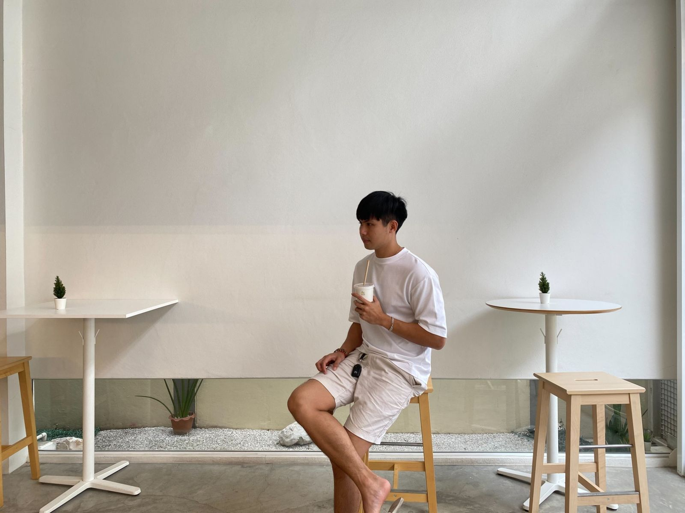
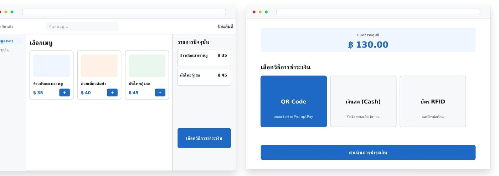
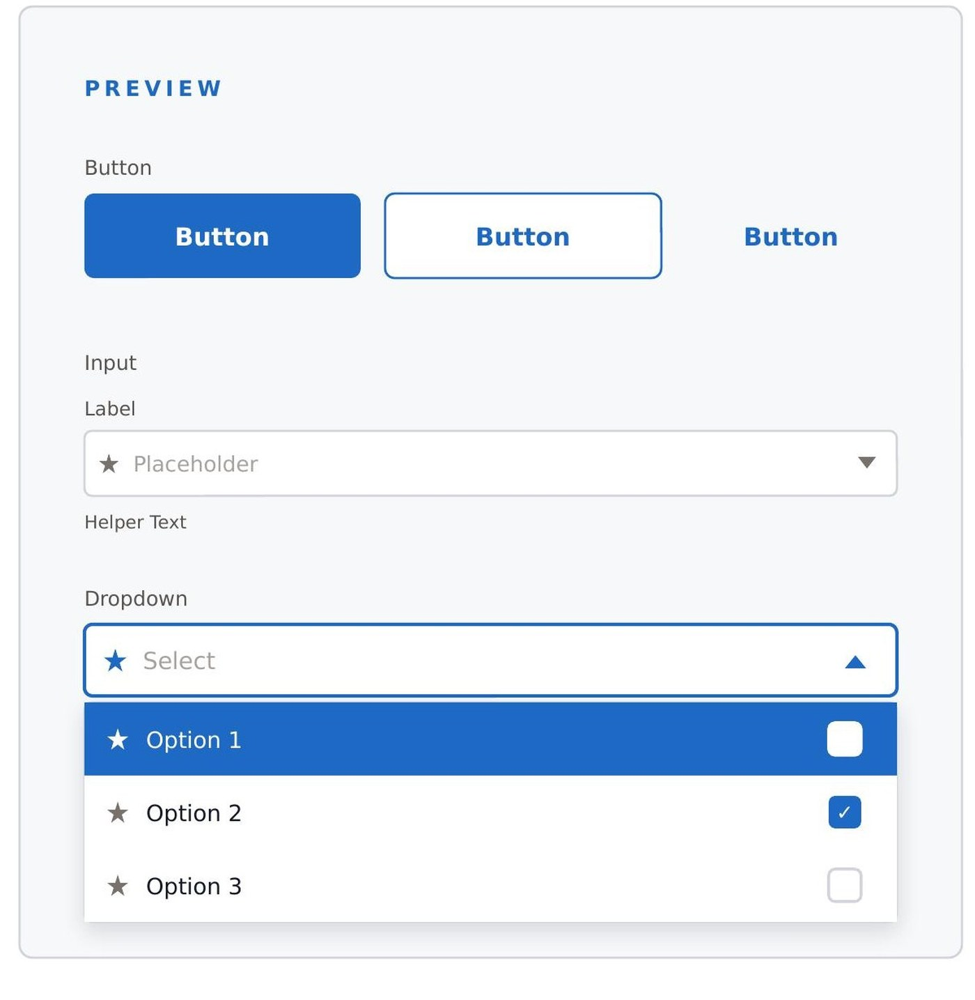
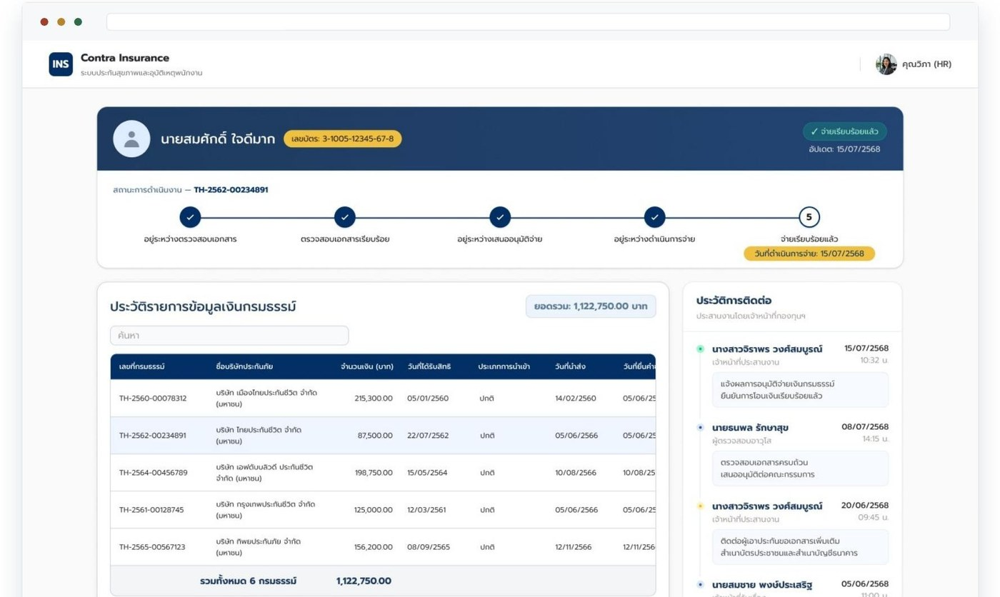
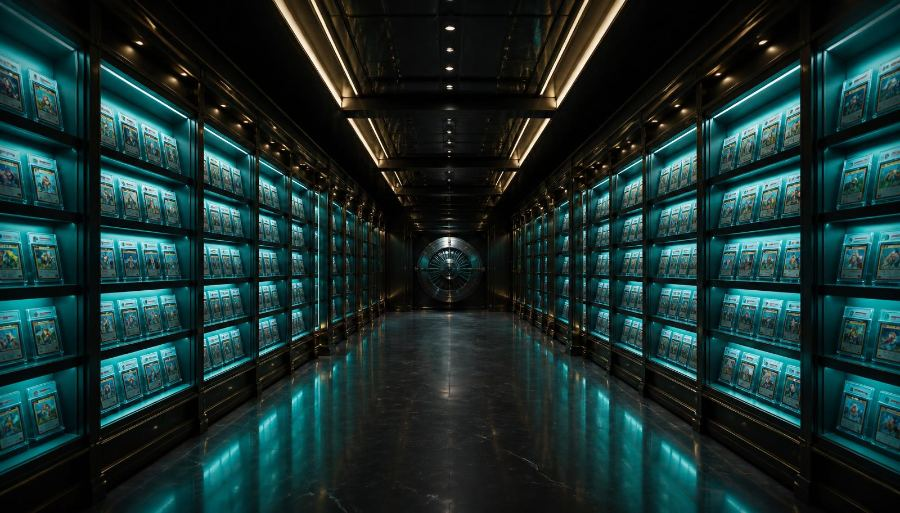
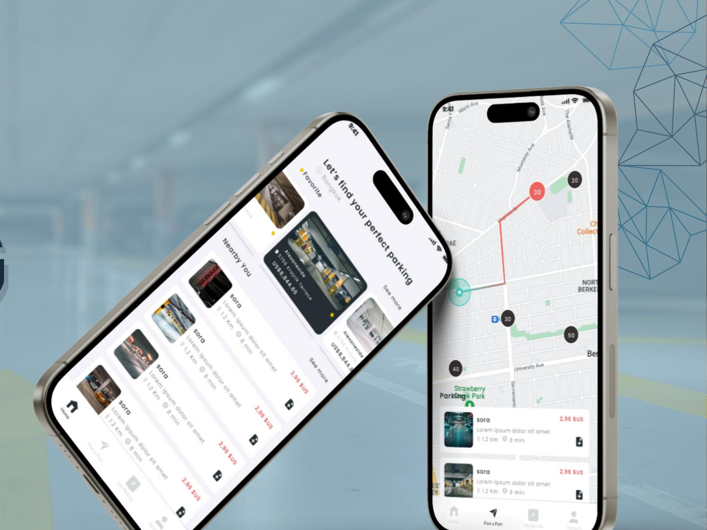

Designing products that just make sense.
Designing clear, scalable experiences for Enterprise, Fintech & EdTech products — from ambiguous requirements to high-fidelity, testable prototypes.
- Enterprise
- Fintech
- EdTech
- Design Systems
- AI Prototyping
Book a parking spot in 3 taps
Open case studyOne token change, every component follows
--color-primary: #1E3B2C
- 01 Research
- 02 User flow
- 03 UI & system
- 04 AI prototype
- Figma
- Claude
- CodeX
- Lovable
- Google Stitch
- Supabase
- HTML/CSS
Hi, I'm Supalerk (Jeeno)
Most interfaces try to look smart. Good ones just make sense.
UX/UI & Product Designer with 5 years of experience specializing in complex Enterprise, Fintech, and EdTech ecosystems. I focus on turning ambiguous business requirements into clear user flows, scalable design systems, and high-fidelity prototypes — using AI-augmented workflows (Claude, CodeX) and rapid 'vibe coding' to move from idea to testable product faster.

Skills
Client interviews, design sprints, usability testing, and end-to-end user flows that turn ambiguity into clarity.
Design tokens, Figma variables, component libraries, and developer handoff — built to scale across multi-tenant products.
Claude & CodeX sub-agents, Lovable.ai, Google Stitch, and 'vibe coding' for rapid, testable high-fidelity prototypes.
Enterprise ERP/CRM, Fintech systems, EdTech platforms, and POS systems — designed for real operational complexity.
Recent Work
A closer look at how the thinking became the interface.

01Canteen & Restaurant POS
Unified payment system (QR / Cash / Student Card) across Desktop and Mobile — replacing a desktop-only, payment-fragmented back office.
Confidential client work — renamed for portfolio Read case study →
02Design System — Token Architecture
A scalable token architecture — Primitive → Semantic → Component — powering Button, Input, and Dropdown across multiple in-house products with independent theming.
Personal design system work — scoped to Button, Input & Dropdown Read case study →
03HR Insurance Lookup System
An internal HR tool for looking up insured employees — replacing a static report with a fast, permission-aware lookup experience.
Confidential client work — renamed for portfolio Read case study →
04Taletails — Card Marketplace & Auctions
A live trading-card marketplace with nightly auctions, verified sellers, and vault-grade authentication — designed and built solo end-to-end with Lovable.ai and a Supabase backend.
Live personal project — visit taletails-trade.com Visit the live site →
Live preview 05Easy Parking — Book Before You Park
A parking-reservation app concept built from real user research — quantitative surveys and interviews shaped a booking, payment, and live-tracking flow end to end.
Self-directed UX case study — concept exploration Read case study →Experience
UX/UI Designer & Product Designer
Infopro Business Solution Co., Ltd.
- Lead end-to-end design strategy for Enterprise ERPs, EdTech (MySuccess, 1,000+ users) and Fintech systems.
- Engineer custom AI sub-agents (Claude/CodeX) to automate UX research and wireframe ideation.
- Establish and govern the centralized Design System across multi-tenant platforms.
UX/UI Designer & Web Designer
Asia Mobile Era Co., Ltd.
- Audited and redesigned web layouts using analytics, improving navigation and conversion rate.
- Architected fully responsive corporate websites with WordPress, HTML & CSS.
UI Designer & Media Designer
Dbater Co., Ltd.
- Crafted corporate web designs in Photoshop with a focus on UI layout, brand alignment and visual hierarchy.
- Supported UI/UX QA and managed internal ERP & data center operations.
Diploma of Leadership Management
Australian Pacific College, Australia
Bachelor of Information Technology
Thai-Nichi Institute of Technology, Thailand
Have a project in mind?
Let's turn it into something clear, usable, and built to scale.
Contact Me ↗